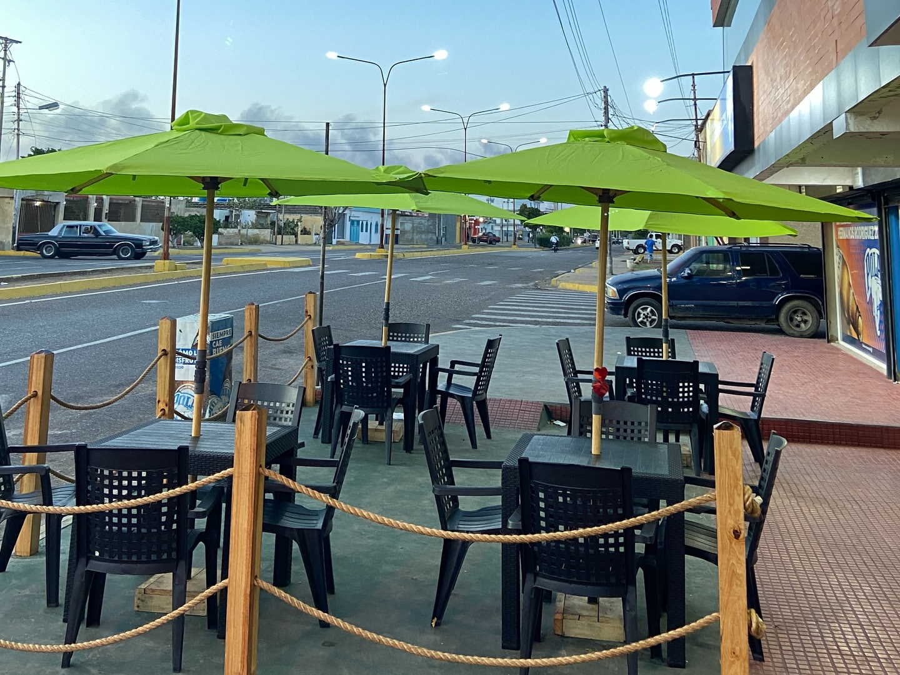
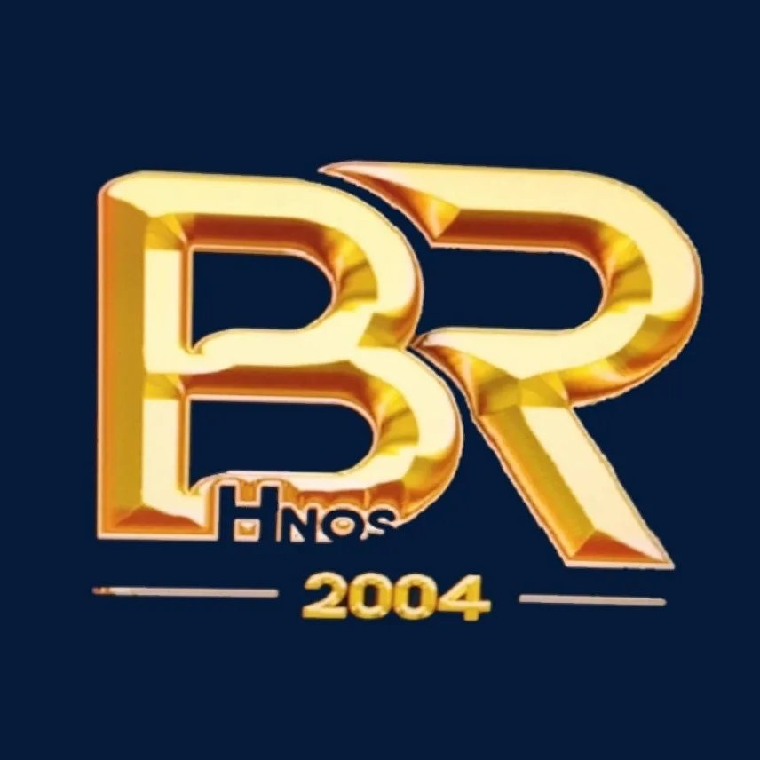

RESULTADOS DOCUMENTADOS
2024 - 2025
2.527
LIKES INSTAGRAM
686
COMPARTIDOS DIRECTOS
138
COMENTARIOS
~$0.10
COSTO / CONVERSACIÓN
Estratega de Negocios
Meta Ads
01
Resultados Documentados
MARKETING
ESTRATEGIA
Bodegón Rodrigues 2004
Investigación de consumidor, expansión de espacio y campaña de contenido.
Identificación de una demanda desatendida de consumo in-situ mediante investigación de consumidores, lo que impulsó la construcción física de un patio exterior y posteriormente una campaña audiovisual basada en la cultura interna de la comunidad.